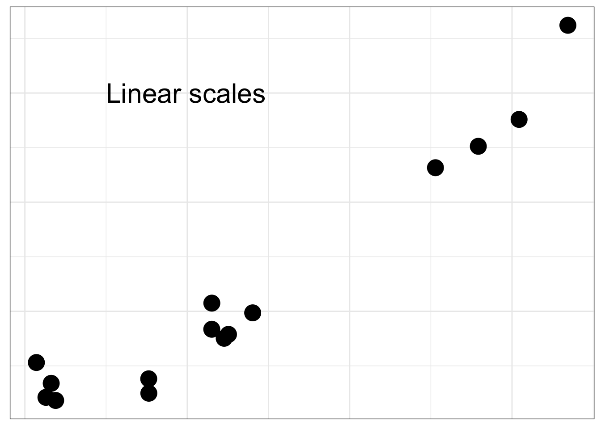
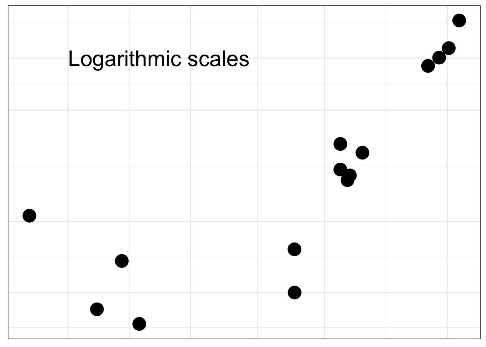

Code
library(tidyverse)── Attaching core tidyverse packages ──────────────────────── tidyverse 2.0.0 ──
✔ dplyr 1.1.2 ✔ readr 2.1.4
✔ forcats 1.0.0 ✔ stringr 1.5.0
✔ ggplot2 3.4.3 ✔ tibble 3.2.1
✔ lubridate 1.9.2 ✔ tidyr 1.3.0
✔ purrr 1.0.2
── Conflicts ────────────────────────────────────────── tidyverse_conflicts() ──
✖ dplyr::filter() masks stats::filter()
✖ dplyr::lag() masks stats::lag()
ℹ Use the conflicted package (<http://conflicted.r-lib.org/>) to force all conflicts to become errorsCode
set.seed(140)
d <- data.frame(x = rgamma(15,1)) %>% mutate(y = 3 + 2*x + 5*I(x^2) + rnorm(15,3,3))
plt <- ggplot(d, aes(x, y))+
geom_point(size=6) +
theme_bw() +
theme(axis.title=element_blank(), axis.text = element_blank(),
axis.ticks=element_blank())
plt + annotate('text', x=0.5, y=60,label = "Linear scales", hjust=0, size=8 )
Code
plt + scale_y_log10() + scale_x_log10() +
annotate('text', x = 0.1, y = 50, label = "Logarithmic scales", hjust=0, size=8)